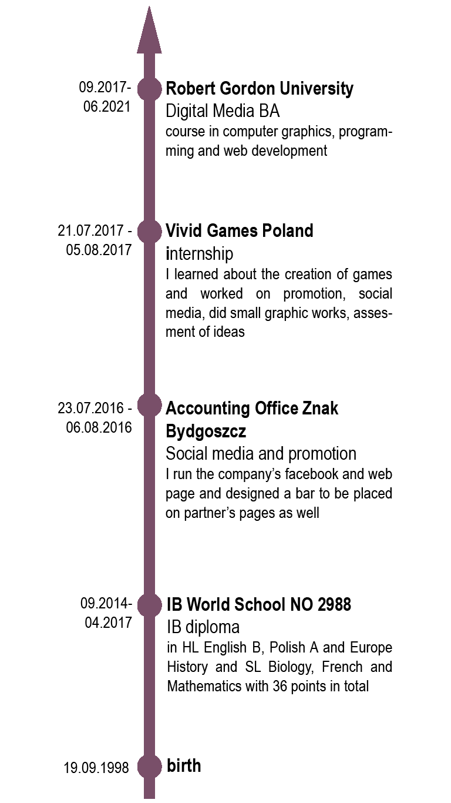

I'm Paulina Guzdziol.
Graphic Designer, Illustrator and Web Developer
I was born on 19. September 1998 in Poland. I studied Digital Media at the Robert Gordon University in Aberdeen, UK. I live here up to this day.
My journey with digital art started in high school. At first I've done some artworks in Photoshop and Corel. However, it wasn't until university that I got really into it.
At Robert Gordon University I was taught how to properly use Adobe software, i.e. Photoshop and Illustrator, the principles of design as well as some animation.
Aside from the graphics I learned the HTML5, Javascript and CSS as parts of my programming and web development courses. I believe that the skills I accuired will suit my future clients needs.

Skills
Adobe Photoshop
Adobe Illustrator
Drawing
Photography
HTML5
CSS
JavaScript